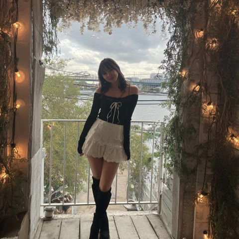

Live specimen · 実機の連携モデル
UniverseView — クラスタ連動（3D · リール · メイン · フォーカス）
1 投稿 = 1 エンティティ。ピンをタイル cell で bin し、中心に最も近い cell がメインクラスタ。代表 id を 1 本に統一し、リール白枠 / 地図の巨大 main / フォーカス対象を同じ id に揃える。リール cell タップ→代表化（地図再選定）、メイン 3D タップ→フォーカス、非メインタップ→glide して新メイン。

1.2k
84
312
Toopdbq
3D タップ＝フォーカス（360°回覧） · フォーカス中は左下のリストをスライドで切り替え · ドラッグ＝地図を回転